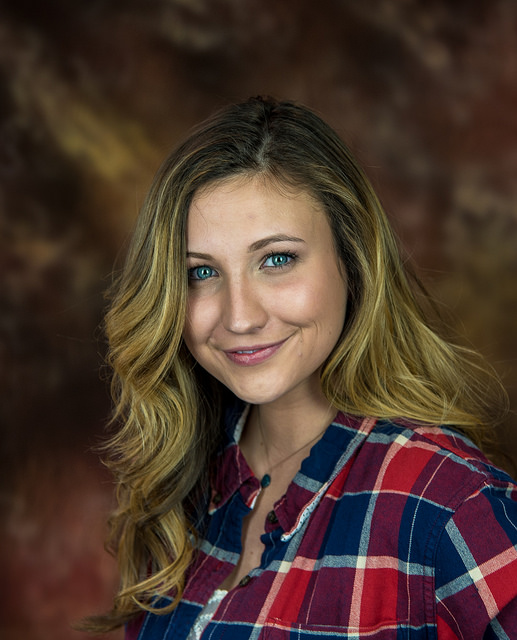

Image Manipulations
By Texas Wesleyan CSC Project Group
Run
Invert
Convert to Grayscale
Add Vignette
Add Bars
Horizontal Bars:
Vertical Bars:
Original Image:
Image after manipulation:

Your browser does not support the HTML5 canvas tag.